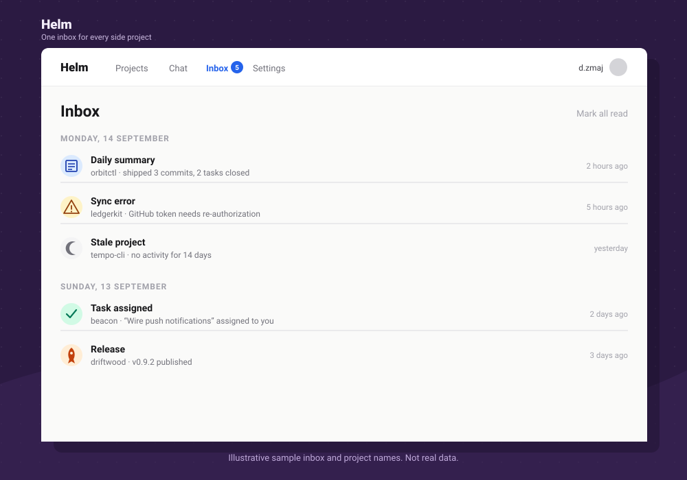

Personal tool · self-hosted · no public sign-up
One inbox for every side project you're running.
Helm watches the GitHub repos behind your side projects and turns their activity into a single, day-grouped inbox: what shipped, what broke, what's gone quiet, and what still needs you.
It's a private instance one person runs for themselves, with a short allowlist of GitHub accounts permitted to sign in. There's no hosted product and nothing to install from a store.

The inbox
Every project reports into one list, grouped by day.
A daily job syncs each active repo, then Helm decides what's worth surfacing. Nothing shows up just because something happened; it shows up because it changed a project's state.
Daily / weekly summary
A written recap of what moved on a project since the last one: commits, closed tasks, open pull requests.
Sync error
The GitHub sync for a project failed, usually an expired or revoked token that needs reconnecting in Settings.
Stale project
A project marked Building or Beta has had no activity for 14 days straight.
Task assigned
Someone assigned a task on the project board to you.
Task due
A task on the board is coming up on, or has passed, its due date.
Idle pull request
An open pull request hasn't been updated in 3 days.
Release
A new GitHub release or tag was published for a synced repo.
The 14-day stale rule and the 3-day idle-PR window only apply to Building and Beta projects. A project you've paused or archived is expected to sit quietly.
The project board
Behind every inbox item is one project's page.
Each project moves through a fixed set of stages, keeps its own three-column task board, notes, docs, and an activity feed built from the same GitHub sync that feeds the inbox.
- Idea
- Building
- Beta
- Live
- Paused
- Archived
To do (2)
Doing (1)
Done (1)
Cards move with drag-and-drop or plain buttons, so the board works with JavaScript off. Each project also keeps notes, markdown docs, and a contributor list drawn straight from GitHub commit authorship.
Under the hood
What it's built on, and why that's not a secret.
This isn't a packaged product, so its dependencies are part of what it is rather than an implementation detail worth hiding.
- Runtime
- A SvelteKit app deployed to Vercel, with two Vercel cron jobs (daily and weekly) driving the sync and summary work.
- Data
- Supabase Postgres holds projects, tasks, notes, docs, releases, and inbox events behind row-level security.
- Sign-in
- GitHub OAuth against a short allowlist of accounts added by hand in Settings; anyone else's GitHub login is turned away.
- Repo sync
- Each project's GitHub token pulls commits, pull requests, issues, and releases into Postgres on a schedule.
- Chat
- A chat panel backed by an OpenAI account (connected per user, ChatGPT-plan aware) drives an agent with read-only tools over the synced data.
Sample · asked in the chat panel
“What changed this week?”
- Reads back recent commits, open pull requests, and closed tasks for the project
- Can draft release notes from merged PRs and commits since the last tag
- Can list issues, releases, and cross-project status on request
Support
Questions about Helm
Helm isn't a public product with a sign-up flow or a support queue, but if something here needs clarifying, get in touch directly.
danijel@danyzmaj.com